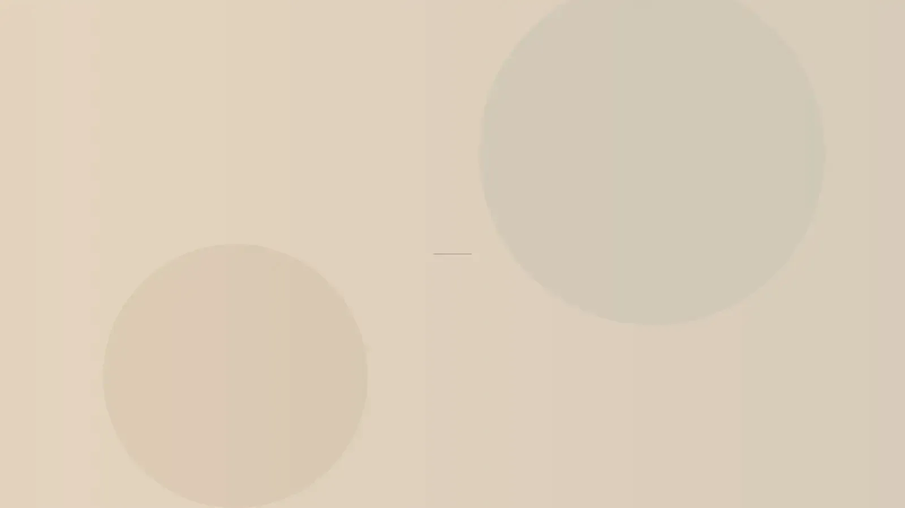
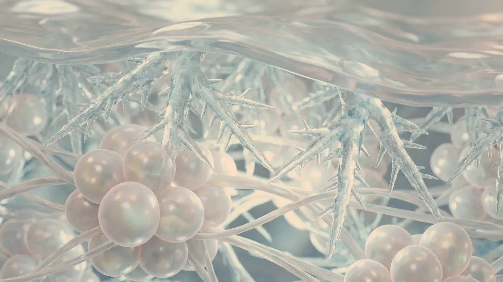

Cilt sorunları · Selülit
Selülit bir hastalık değil, bir yapı özelliğidir
Selülit, deri altındaki yağ bölmelerinin ve onları deriye bağlayan ince lif bantlarının yüzeyde dalgalı, portakal kabuğunu andıran bir görünüm oluşturmasıdır. Ergenlik sonrasında kadınların büyük çoğunluğunda bir ölçüde bulunur ve zayıf kişilerde de görülür. Uygulamalarda hedef bu yapıyı değiştirmek değil, yüzeydeki görünümü yumuşatmaktır.

Görsel yapay zekâ ile üretilmiştirAyrım
Selülit nedir, ne değildir?
Selülit, deri altındaki yağ dokusunun yerleşim biçimiyle ilgilidir. Yağ, deriye dik uzanan lif bantlarıyla ayrılmış küçük odacıklar içinde durur. Odacıklar dolgunlaştığında ya da bantlar deriyi aşağı çektiğinde yüzeyde çukurlar ve kabarıklıklar belirir. Aşağıdaki başlıklar, muayenede sorulan temel soruları özetler.
Neden çoğunlukla kadınlarda görülür?
Kadınlarda lif bantları deriye dik uzanır ve yağ odacıkları yukarı doğru kabarmaya daha yatkındır; erkeklerde bantlar çapraz ve daha sık bir ağ örer. Östrojen başta olmak üzere hormonlar, kalıtım, deri kalınlığı, kan dolaşımı ve lenf akışı da görünümü etkiler.
En sık uyluğun arka ve yan yüzünde, kalçada, karnın alt bölümünde ve kol arkasında görülür. Gebelik, hareketsiz yaşam, sigara ve uzun saatler oturmak görünümü belirginleştirebilir.
Ne değildir?
Selülit bir hastalık değildir; vücutta “toksin” birikiminin ya da kötü beslenmenin kanıtı da sayılmaz. Tıpta benzer adla anılan deri enfeksiyonuyla hiçbir ilgisi yoktur: o durum kızarık, sıcak, ağrılı ve hızla yayılan bir şişliktir ve acil tedavi gerektirir. Bu sayfada anlatılan, yalnızca deri yüzeyindeki dalgalı görünümdür.
Evreler
Görünüm muayenede genellikle dört evrede tanımlanır. Evre 0’da ayakta da yatarken de yüzey düzdür. Evre 1’de deri normal görünür; parmaklarla sıkıştırıldığında ya da kas kasıldığında dalgalanma ortaya çıkar. Evre 2’de dalgalanma ayaktayken kendiliğinden görülür, uzanınca kaybolur. Evre 3’te uzanırken de belirgindir ve çukurlar derinleşmiştir. Hangi seçeneğin ne ölçüde katkı sağlayabileceğini evre doğrudan etkiler.
Kiloyla ilişkisi
Kilo alımı yağ odacıklarını doldurduğu için görünümü belirginleştirir; ancak selülit kiloya bağlı bir durum değildir ve ideal kilosundaki kişilerde de bulunur. Hızlı ve büyük kilo kaybı ise deriyi gevşetip dalgalanmayı daha görünür kılabilir. Dengeli bir kilo, düzenli hareket ve kas gücünün korunması genel görünümü destekler; ne var ki bunlar tek başına selülitin ortadan kalkmasını sağlamaz.
Selülit deri altındaki yapının bir özelliği olduğundan, hiçbir yöntem bu yapıyı kalıcı olarak değiştirmez. Uygulamaların amacı, deri gerginliği ve doku niteliği desteklenerek yüzeydeki dalgalanmanın daha az fark edilmesidir. Değişim kademelidir; evreye ve kişiye göre farklılık gösterir.
Elde edilen görünümün korunması için çoğunlukla belirli aralıklarla tekrarlanan bir bakım planı gerekir; kilo değişimi, hareket düzeni ve hormonal dönemler bu süreci etkiler. Muayenede evreniz, derinizin esnekliği ve eşlik eden bir yağ birikimi olup olmadığı birlikte değerlendirilir ve beklenti buna göre konuşulur.
İki bacakta simetrik, ayak bileğinde birden sona eren, dokunmakla ağrıyan ve kolay morarma eğilimi gösteren bir dolgunluk lipödemi düşündürür; ayaklara kadar inen şişlik ise lenf ya da toplardamar sorunlarının işareti olabilir. Bu durumlar ayrı bir değerlendirme gerektirir. Bacakta aniden gelişen kızarıklık, sıcaklık, ağrı ve ateş bir deri enfeksiyonuna; tek bacakta ani şişlik ve ağrı ise pıhtıya işaret edebilir. Böyle bir durumda beklemeden bir sağlık kuruluşuna başvurun.
Sonrası
Evre belirlendikten sonra hangi seçenekler konuşulur?
Aşağıdaki başlıklar, selülit görünümü ve ona eşlik edebilen yağ birikimi için konuşulan seçeneklerdir. Hangisinin ne amaçla kullanılacağı evrenize ve muayene bulgularınıza göre belirlenir; sonuçlar kişiden kişiye değişir.
Selülit görünümü
YÜZEYMuayenede belirlenir→Bölgesel lipoliz
YAĞ DOKUSUGünler içinde→Mezoterapi
DOKUMuayenede belirlenir→Hekim muayenesi
DAHİLİAynı gün→
Selülit görünümü
Mezoterapi, lipoliz ve cihaz desteğinin bir arada planlandığı, yüzeydeki düzensizliği yumuşatmaya yönelik bir programdır.
Sayfasına git →Sorgulayın
Sorunuzu seçin, cevap ekrana düşsün
Sonraki adım
Selülit evrenizi ve beklentinizi birlikte değerlendirelim
Muayenede görünümün evresi, eşlik eden yağ birikimi ve karıştırılabilecek durumlar tek tek ele alınır.